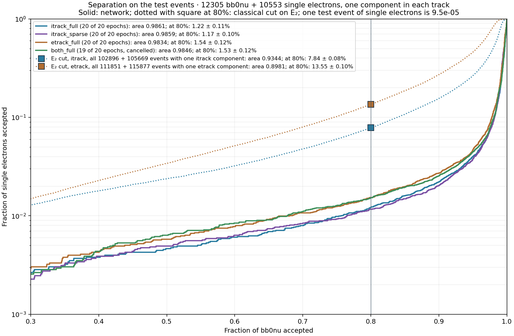
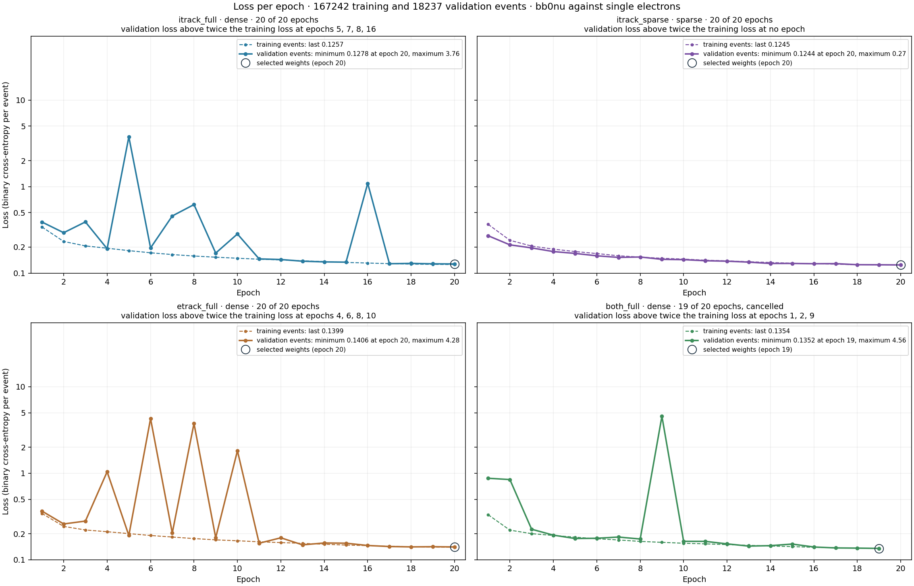
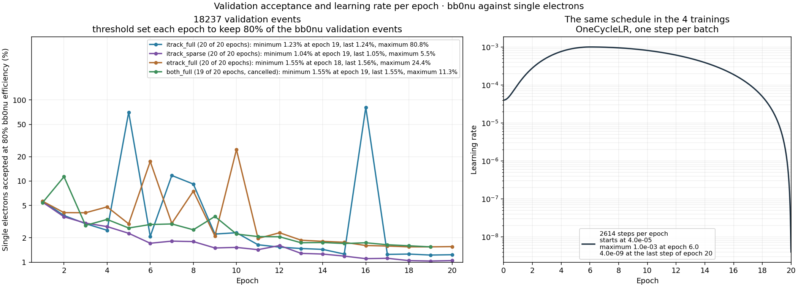

Samples bb0nu_itaca_100k and single_electrons_itaca_100k, events with one component in each track. Test batches [0, 1, 2, 3, 4] (12,305 bb0nu + 10,553 single electrons), validation batches [5, 6, 7, 8] (18,237 events); the other batches train. Batch size 64, maximum learning rate 0.001, weight decay 0.0001, seed 1. Network and procedure: classification network.
both_full has completed 19 of 20 epochs, cancelled; its numbers are those of the weights with the lowest validation loss among them.
An event is accepted when the network output exceeds a threshold; the threshold of each column keeps that fraction of the bb0nu test events. The weights are those of the epoch with the lowest validation loss. The last rows apply the classical cut on E₂, the smaller endpoint energy of the main track: to the same test events, and to all events of the two samples with one component in that track (comparison and classical separation). Errors are binomial.
| Training | Input | Model | Parameters | Training events | Epochs | Time | Time per epoch (s) | Area under the curve | Single electrons accepted at a bb0nu efficiency of | ||||
|---|---|---|---|---|---|---|---|---|---|---|---|---|---|
| 90% | 80% | 70% | 60% | 50% | |||||||||
| itrack_full | itrack | dense | 1,467,345 | 167,242 | 20 of 20; selected 20 | 3 h 11 min | 567 | 0.9861 | 2.21 ± 0.14% | 1.22 ± 0.11% | 0.80 ± 0.09% | 0.61 ± 0.08% | 0.46 ± 0.07% |
| itrack_sparse | itrack | sparse | 1,467,345 | 167,242 | 20 of 20; selected 20 | 0 h 10 min | 29 | 0.9859 | 2.03 ± 0.14% | 1.17 ± 0.10% | 0.84 ± 0.09% | 0.63 ± 0.08% | 0.49 ± 0.07% |
| etrack_full | etrack | dense | 1,467,345 | 167,242 | 20 of 20; selected 20 | 3 h 20 min | 592 | 0.9834 | 2.71 ± 0.16% | 1.54 ± 0.12% | 1.07 ± 0.10% | 0.78 ± 0.09% | 0.58 ± 0.07% |
| both_full | both | dense | 2,950,945 | 167,242 | 19 of 20, cancelled; selected 19 | 5 h 36 min | 1044 | 0.9846 | 2.55 ± 0.15% | 1.53 ± 0.12% | 1.11 ± 0.10% | 0.84 ± 0.09% | 0.63 ± 0.08% |
| E₂ cut, itrack, test events | itrack | 0.9357 | 15.56 ± 0.35% | 7.83 ± 0.26% | 4.87 ± 0.21% | 3.03 ± 0.17% | 2.20 ± 0.14% | ||||||
| E₂ cut, etrack, test events | etrack | 0.9118 | 23.31 ± 0.41% | 12.96 ± 0.33% | 7.78 ± 0.26% | 5.17 ± 0.22% | 3.37 ± 0.18% | ||||||
| E₂ cut, itrack, all 102,896 + 105,669 events with one itrack component | itrack | 0.9344 | 15.58 ± 0.11% | 7.84 ± 0.08% | 4.78 ± 0.07% | 3.22 ± 0.05% | 2.38 ± 0.05% | ||||||
| E₂ cut, etrack, all 111,851 + 115,877 events with one etrack component | etrack | 0.8981 | 27.16 ± 0.13% | 13.55 ± 0.10% | 7.99 ± 0.08% | 5.15 ± 0.06% | 3.41 ± 0.05% | ||||||

Training loss: mean over the epoch, with the random symmetry operations and shifts. Validation loss: after the epoch, without them.


Numerical results: itrack_full · itrack_sparse · etrack_full · both_full · comparison.h5.